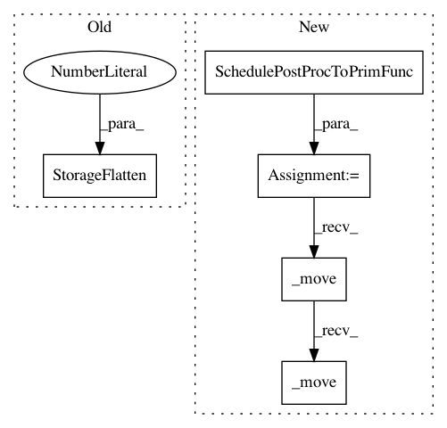

c3511c5e2c2f903606209c9eb6d56c2221570a24,python/tvm/autotvm/feature.py,,ana_lower,#Any#Any#Any#Any#,38
Before Change
// Phase 0
bounds = schedule.InferBound(sch)
stmt = schedule.ScheduleOps(sch, bounds, True)
stmt = ir_pass.StorageFlatten(stmt, binds, 64)
stmt = ir_pass.CanonicalSimplify(stmt)
assert simple_mode
return stmt
After Change
// Phase 0
bounds = schedule.InferBound(sch)
stmt = schedule.ScheduleOps(sch, bounds, True)
func = schedule.SchedulePostProcToPrimFunc(args, stmt, None)
mod = tvm.IRModule.from_expr(func._move())
mod = tvm.tir.transform.StorageFlatten(64)(mod._move())
mod = tvm.tir.transform.Simplify()(mod._move())
assert simple_mode
return mod["main"].body
In pattern: SUPERPATTERN
Frequency: 3
Non-data size: 5
Instances
Project Name: apache/incubator-tvm
Commit Name: c3511c5e2c2f903606209c9eb6d56c2221570a24
Time: 2020-04-19
Author: tqchen@users.noreply.github.com
File Name: python/tvm/autotvm/feature.py
Class Name:
Method Name: ana_lower
Project Name: apache/incubator-tvm
Commit Name: c3511c5e2c2f903606209c9eb6d56c2221570a24
Time: 2020-04-19
Author: tqchen@users.noreply.github.com
File Name: tests/python/unittest/test_tir_transform_thread_sync.py
Class Name:
Method Name: test_thread_storage_sync
Project Name: apache/incubator-tvm
Commit Name: c3511c5e2c2f903606209c9eb6d56c2221570a24
Time: 2020-04-19
Author: tqchen@users.noreply.github.com
File Name: tests/python/unittest/test_tir_transform_inject_copy_intrin.py
Class Name:
Method Name: test_copy_pad_split